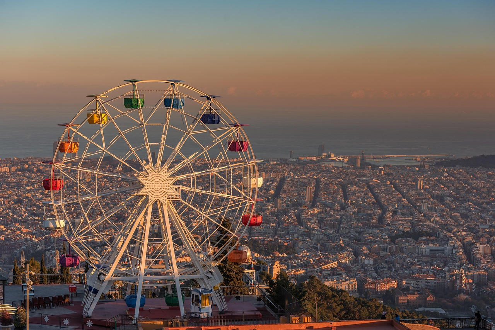

Willkommen in Barcelona
Diese Seite zeigt einige der schönsten Orte Barcelonas. Viel Spaß beim Entdecken!
Barcelona – das ist mehr als nur Sonne und Strand. Die katalanische Hauptstadt verzaubert mit ihrer lebendigen Atmosphäre, ihrer kreativen Architektur und ihrer einzigartigen Mischung aus Geschichte und Moderne.
Kaum eine andere Stadt in Europa vereint so viele kulturelle Highlights auf so engem Raum: von den faszinierenden Bauten Antoni Gaudís wie der Sagrada Familia und dem Park Güell über die berühmte Flaniermeile La Rambla bis hin zum modernen Hafenviertel mit dem ikonischen W-Hotel.
Die Stadt ist aber nicht nur ein Fest für die Augen – auch kulinarisch hat Barcelona einiges zu bieten: Tapas, frischer Fisch, Churros und natürlich ein kühles Glas Sangría in der Abendsonne.
Diese Seite ist ein kleiner persönlicher Einblick in meine Faszination für Barcelona. In der Galerie findest du eine Auswahl meiner liebsten Eindrücke – Orte, die mich begeistert haben und die ich mit dir teilen möchte. Vielleicht warst du selbst schon dort oder planst gerade deine Reise? Dann wünsche ich dir jetzt schon viel Vorfreude!
Viel Spaß beim Durchklicken – ¡hasta pronto en Barcelona!